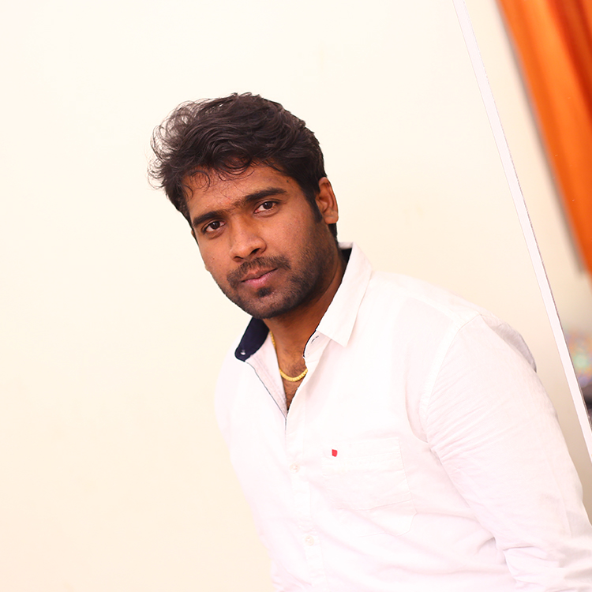

Team leader with extensive experience who has worked in web
development.
Involved in unit testing, coding, and requirement analysis.
Individual contribution to the creation of web apps.
Open source software was located and adapted for use on public webpages and corporate networks.
comprehensive administration of online projects, including planning, carrying out, and maintaining them.
Jan 2014 - Present · 9 yrs 7 mos, Malta (Working Remote)
I'm a FairTech Team Leader.
PHP, Joomla, Virtuemart, WordPress, Woocommerce, Opencart, Drupal,
Magento, Java, Struts, Spring, Jquery, Javascript, SQL, MYSQL, HTML,
and CSS expertise in web development.
Additionally, the capacity to pick up new technology quickly.
Apr 2013 - Dec 2013 · 9 mos, Chennai Area, India
Apr 2012 - Apr 2013 · 1 yr 1 mo, Chennai Area, India
Aug 2011 - Apr 2012 · 9 mos, Chennai Area, India